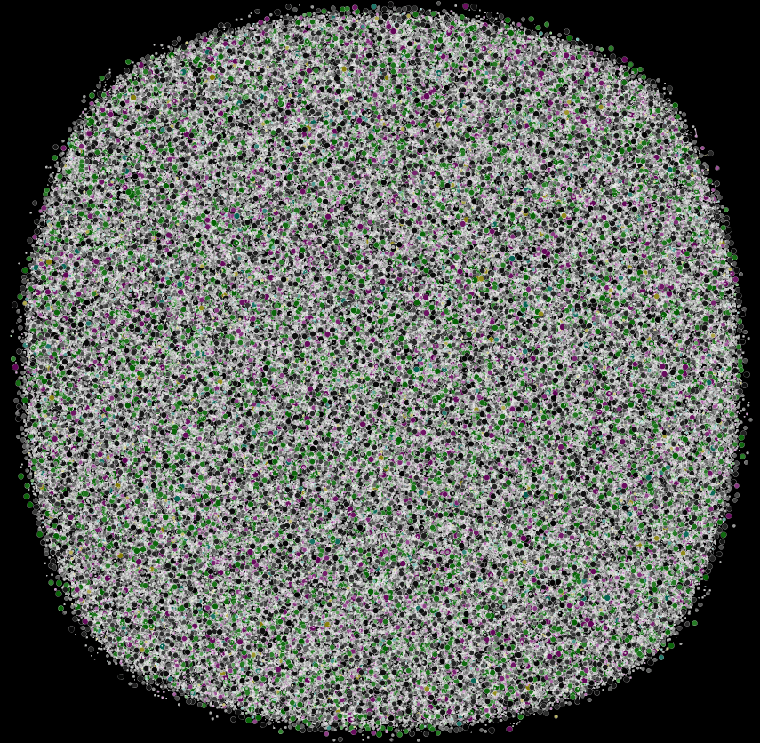
One view of the entire network showing all 415,808 nodes but none of the 283,317 edges

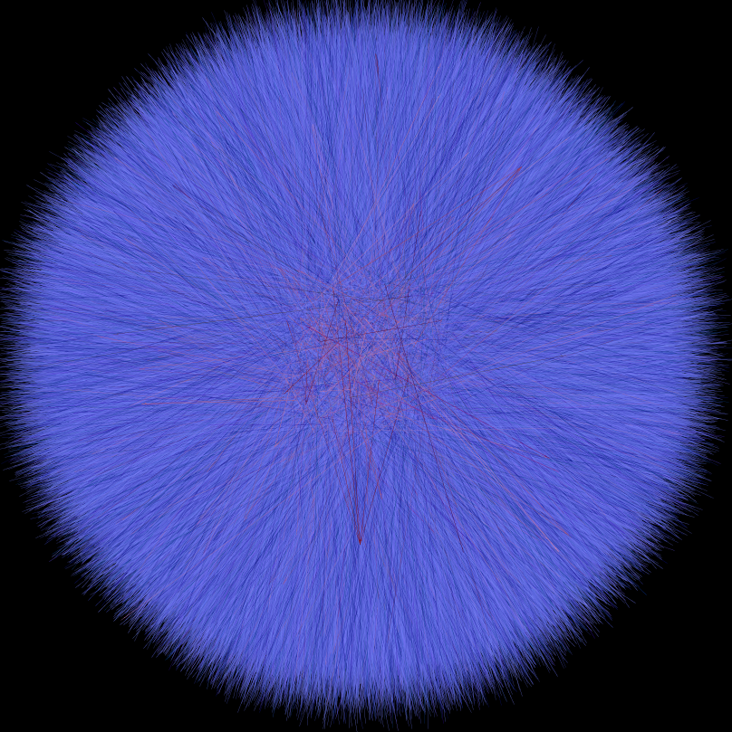
The same network layout, with only edges shown, colored as a mix of time (light to dark for early to late) and centrality (blue to red as more to less central).

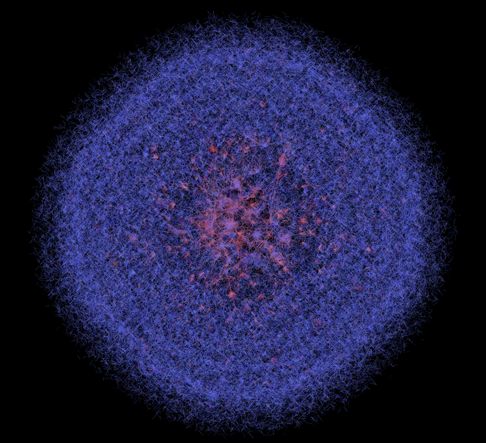
The above network, laid out using a different force-directed algorithm.

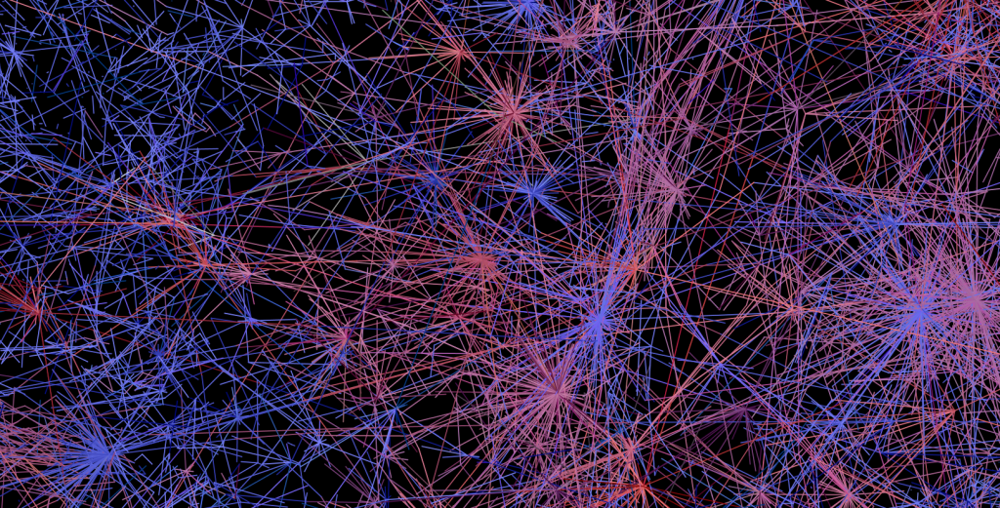
One of the central neighborhoods of the above network. It is very difficult to develop more than general conceptions of such large networks based on visualized topology, and aggregated statistics tend to be the better route.

There exists a single component in this network that encompasses 7% of the network, but there are other areas of high centrality outside that component.

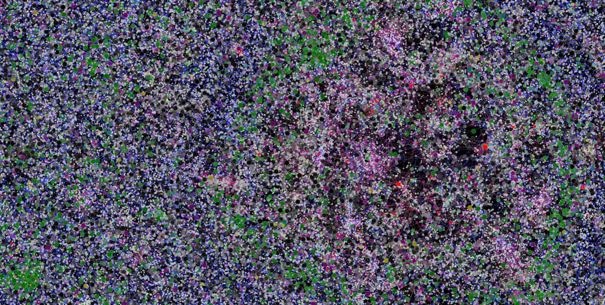
Node clustering may provide another visual cue as to structure, but again, with such large networks aggregated statistics are probably a better route.

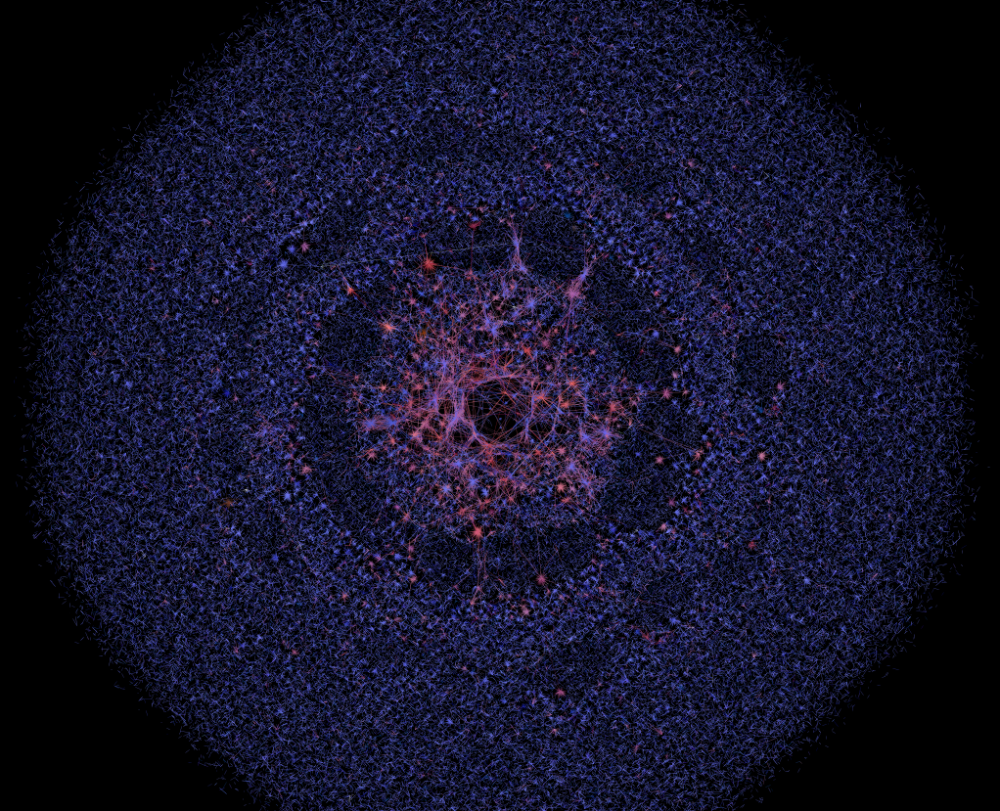
Any force-directed layout will sort itself differently by modifying the settings and amount of time given to run. In this case and below, the algorithm is allowed to run longer and repulsion is reduced, de-emphasizing less connected regions by reducing the size of the edges connecting them.

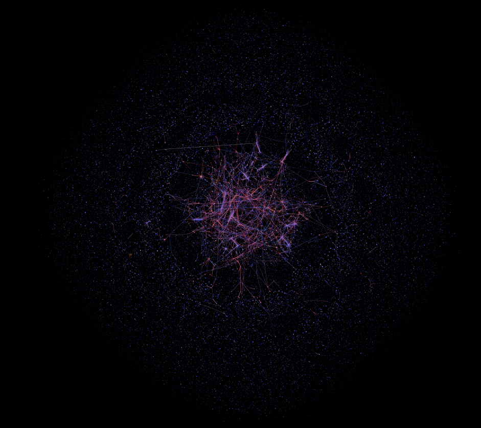
Here the network has been allowed to settle to a wide extent. Force-directed algorithms provide a tantalizing possibility in their analogous behavior to various gravitationally-based stellar phenomena. If distance could be tied firmly to a recognized variable that changed over time, then the visual layout could actually represent some true network behavior.

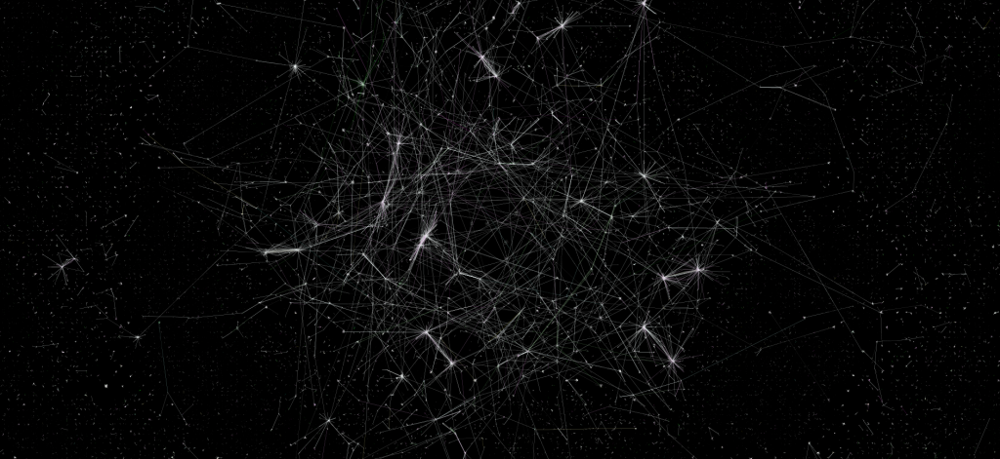
The core-periphery structure of this network is one interesting high-level feature. There is a recognizable, highly-connected and large group of twitter users that are distinct from a massive amount of disconnected "tweets into the wilderness".

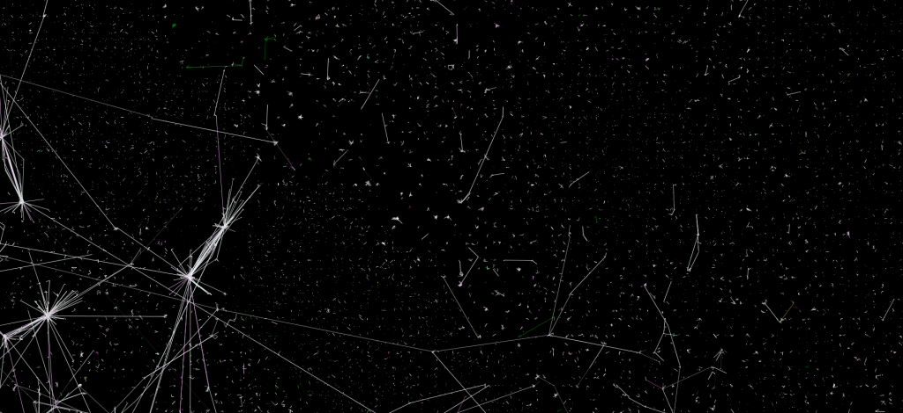
Small groups of disconnected users and tweets surrounding the main component resemble visualizations of the satellite debris that surround the Earth.

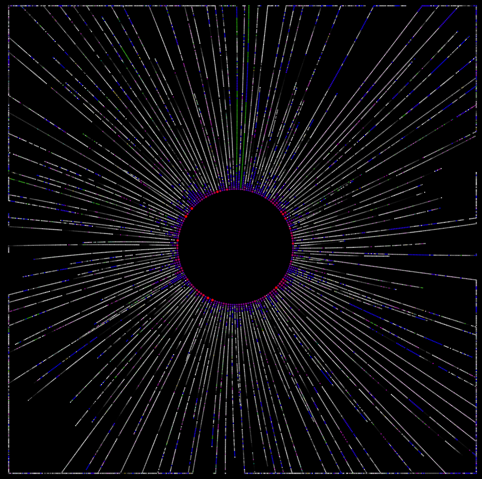
The self-similar modules in the largest component, arrayed in a radial layout.

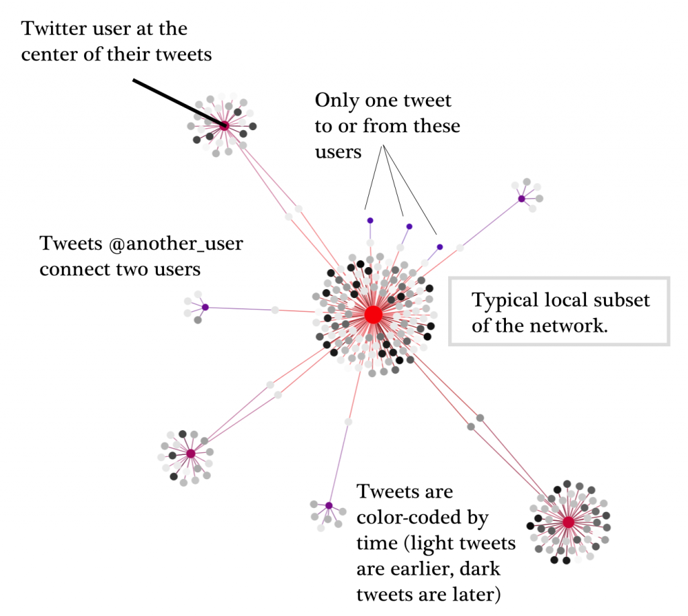
How tweets and users are connected and visualized.

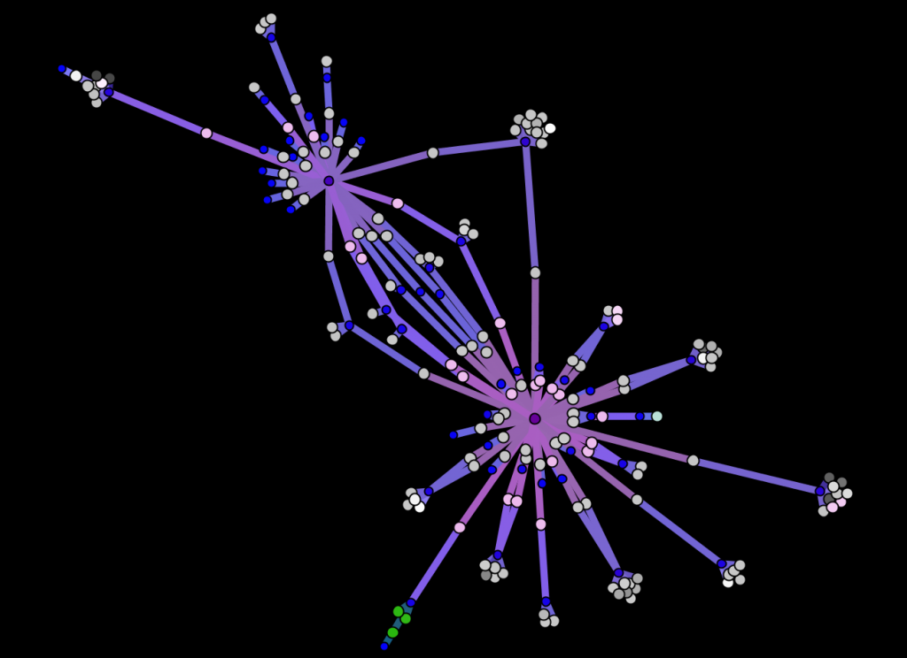
Two spammers who are spamming many of the same users.

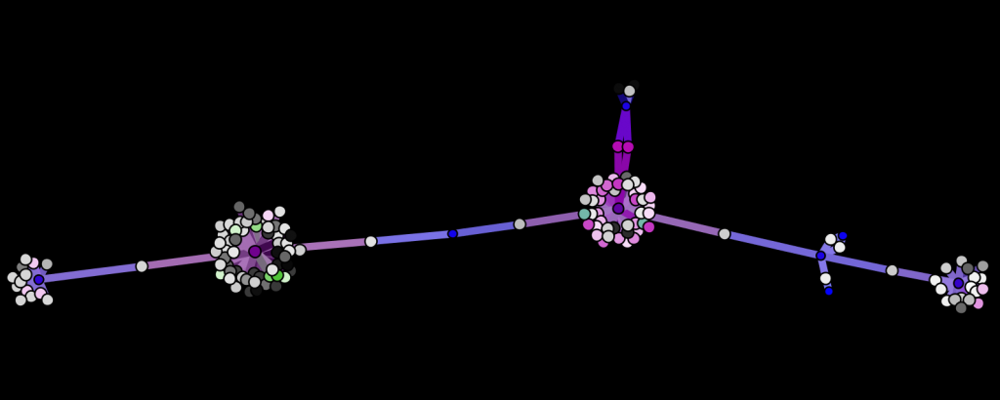
Users connected through tweets to other users.

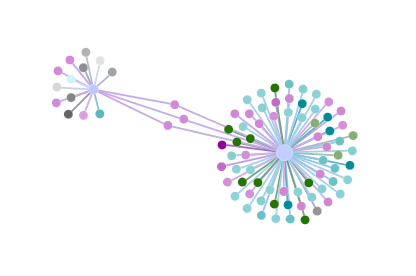
A conversation between Twitter users focused on whether terror and Islam can be separated.

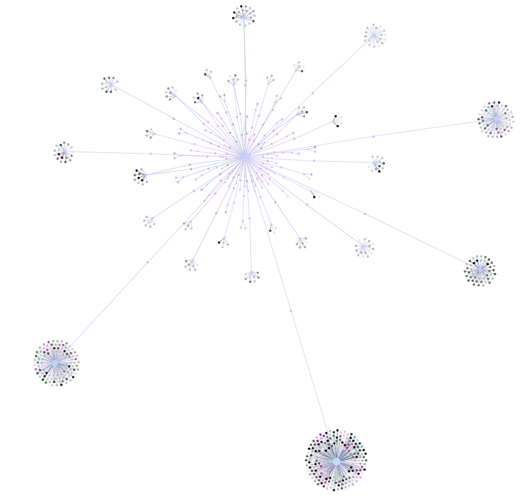
Another detail of a spammer, emphasizing time-of-tweet similarity.

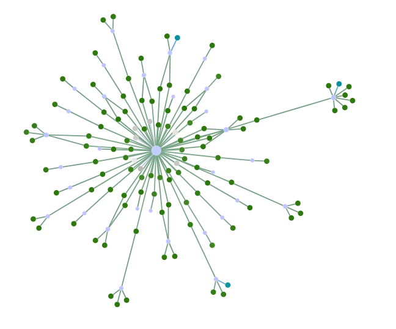
While appearing like a spammer, the above user is actively writing different tweets at a variety of users during a short period.

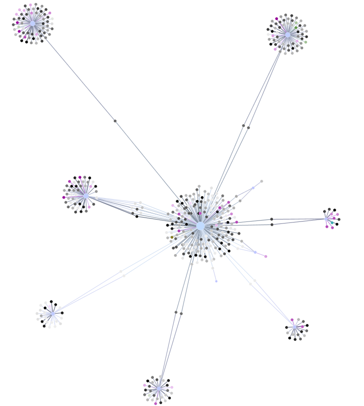
Another typical cluster, but here the centrality scores of user nodes are only indicated by node size--the color for all of them has been set to a light-blue.